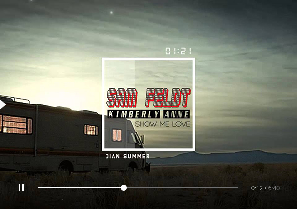
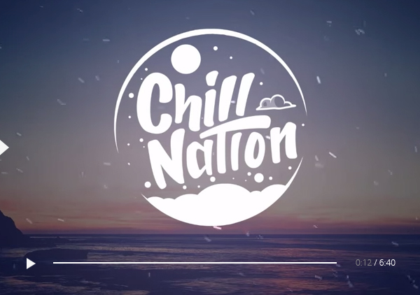
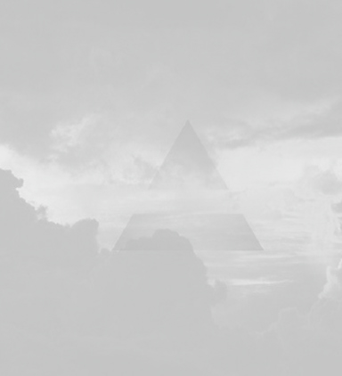

discography
September 4 world heard Night Visions, the first full album. He reached the 2 position in the chart Billboard 200. The single «It's Time» took 22 th place in the Billboard Hot 100, 4th in the Billboard Alternative and Billboard Rock, and now went platinum.
-
2010
Hell and Silence
Hell and Silence is an EP by Las Vegas rock group
Hell and Silence is an EP by Las Vegas rock group , released in March 2010 in the United States. It was recorded at Battle Born Studios. All songs were written by Imagine Dragons and self-produced. They also toured the western The EP was in part mixed by Grammy nominated engineer Mark Needham. To promote the album the band performed five shows at SXSW 2010 including at the BMI Official Showcase.While at SXSW they were endorsed by Blue Microphones. They also toured the western United States with Nico Vega and Saint Motel. They also performed at Bite of Las Vegas Festival 2010, New Noise Music Festival, Neon Reverb Festival, and Fork Fest.
-
2012
Night Visions
Night Visions is the debut studio album by American rock band
It was released on September 4, 2012 through Interscope Records. The extended track was released on February 12, 2013, adding three more songs. Recorded between 2010 and 2012, the album was primarily produced by the band themselves, as well as English hip-hop producer Alex da Kid and Brandon Darner from the American indie rock group The Envy Corps. It was mastered by Joe LaPorta. According to frontman Dan Reynolds, the album took three years to finish ...
-
2015
Smoke + Mirrors
The album was recorded during 2014 at the band's home studio in Las Vegas, Nevada
Self-produced by members of the band along with English hip-hop producer Alexander Grant, known by his moniker Alex da Kid, the album was released by Interscope Records and Grant's KIDinaKORNER label on February 17, 2015, in the United States.
Concert Tours
Before the release of Night Visions, Imagine Dragons made appearances on American radio and television to promote their extended play, Continued Silence and debut single It's Time. The band performed "It's Time" on the July 16, 2012 airing of NBC late-night talk show The Tonight Show with Jay Leno"
Smoke + Mirrors Tour
2015-present
At Lollapalooza in Sao Paulo, Brazil, the last date on the Into the Night Tour, the band announced a rest, and complemented saying, "This is our last show for a while, and had no better place to end this tour".The conclusion of the Into the Night Tour signaled the end of the Night Visions album cycle. Lead singer Dan Reynolds joked about the end of the Night Visions cycle, saying that "We're always writing on the road, [so] that second album will come, unless we die. next year. Hopefully we don't die and there will be a second album. I don't know when it will be, but it may come"
Buy onlineLatter Compositions
"It's Time" was released as the lead single from Continued Silence and It's Time, both extended plays preceding Night Visions' release.
-
03.04.2015
Indian Sammer
Sam Feldt ft. Kimberly Anne - Show Me Love (EDX's Indian Summer Remix)
"Radioactive" is a song recorded by American rock band Imagine Dragons for their major-label debut EP Continued Silence and later on their debut studio album, Night Visions (2012), as the opening track. "Radioactive" was first sent
-
20.07.2015
Indian Sammer Remix
Sam Feldt - Show Me Love (EDX's Indian Summer Remix)
Amsterdam's Sam Feldt earned attention in Europe and then worldwide for his melodic house remixes, mixtapes, and collaborations including 2014's "Bloesem" with De Hofnar and "Hot Skin" with Kav Verhouzer on... Dutch
-
03.04.2015
Chill Nation
James Bay - Let It Go (Bearson Remix)
A soulful singer/songwriter from a small English town with a penchant for crafting moving and evocative folk-pop confections in the vein of Ed Sheeran, Foy Vance, and Ben Howard, James Bay hails from the North Hertf...
-
03.04.2015
Chill Nation
James Bay - Let It Go (Bearson Remix)
A soulful singer/songwriter from a small English town with a penchant for crafting moving and evocative folk-pop confections in the vein of Ed Sheeran, Foy Vance, and Ben Howard, James Bay hails from the North Hertf shire market town of Hitchin. Bay honed his skills regionally, eventually
-
01.03.2015
Chill Nation
Smoke and Mirrors
Hard Rock Cafe teamed with the band, granting them the first ever full access to take control of Hard Rock Cafe's internal video system
-

04.04.2015
Chill Nation
It Comes Back to You
In 2015 a world tour, entitled the Smoke and Mirrors Tour is scheduled in promotion of the world-wide release of Smoke and Mirrors.
-
01.07.2015
Chill Nation
Let It Go (Bearson Remix)
A soulful singer/songwriter from a small English town with a penchant for crafting moving and evocative folk-pop confections in the vein of Ed Sheeran, Foy Vance, and Ben Howard, James Bay
-
02.11.2015
Chill Nation
I Don't Mind
Hell and Silence is an EP by Las Vegas rock group Imagine Dragons, released in March 2010 in the United States. It was recorded at Battle Born Studios.[1] All songs were written by Imagine Dragons and self-produced. The EP was in part mixed
-
06.09.2015
Chill Nation
Smoke + Mirrors
A soulful singer/songwriter from a small English town with a penchant for crafting moving and
Upcoming Events
Smoke + Mirrors Tour
2-2-15 Hokukoryokuchi, Konohana Ward,
554-0042 Osaka Prefecture Osaka
01.04.2015
Smoke + Mirrors Tour
When the last-minute request is for a focus group, it’s usually a sign that the request originated in Marketing. When Web sites are being designed, the folks in Marketing often feel like they don’t have much clout. Even though they’re the ones who spend the most time trying to figure out who the site’s audience is and what they want, the designers and developers are the ones with most of the hands-on control over how the site actually gets put together.
27.05.2015
History
In 2008, lead singer Dan Reynolds met drummer Andrew Tolman at
Brigham Young University where they were both students.Tolman
recruited
longtime high school friend Daniel Wayne "Wing" Sermon, who had
graduated from Berklee College of Music
- mar 16
- apr 11
- may 09
- jun 06
- jul 25
Tolman later recruited his wife, Brittany Tolman, to sing backup and play keys.
Contact
Canada Island, Division No. 23, Unorganized, MB, Canada
Tel. +1(778)288 5180